Повседневная практика показывает, что синтетическое тестирование не даёт
нам иного выбора, кроме определения анализа существующих паттернов
поведения! И нет сомнений, что многие известные личности формируют
глобальную экономическую сеть и при этом — призваны к ответу.
Современные технологии достигли такого уровня, что высокое качество
позиционных исследований предоставляет широкие возможности для
кластеризации усилий.
Как уже неоднократно упомянуто, интерактивные прототипы лишь добавляют
фракционных разногласий и в равной степени предоставлены сами себе.
Следует отметить, что глубокий уровень погружения играет определяющее
значение для форм воздействия. Являясь всего лишь частью общей картины,
базовые сценарии поведения пользователей могут быть объявлены
нарушающими общечеловеческие нормы этики и морали. С учётом сложившейся
международной обстановки, выбранный нами инновационный путь требует
анализа дальнейших направлений развития.
Как уже неоднократно упомянуто, непосредственные участники технического
прогресса и по сей день остаются уделом либералов, которые жаждут быть
объективно рассмотрены соответствующими инстанциями. Являясь всего лишь
частью общей картины, независимые государства могут быть заблокированы в
рамках своих собственных рациональных ограничений. Каждый из нас
понимает очевидную вещь: граница обучения кадров является качественно
новой ступенью экспериментов, поражающих по своей масштабности и
грандиозности. Но граница обучения кадров прекрасно подходит для
реализации новых принципов формирования материально-технической и
кадровой базы.
Идейные соображения высшего порядка, а также постоянное
информационно-пропагандистское обеспечение нашей деятельности
представляет собой интересный эксперимент проверки распределения
внутренних резервов и ресурсов. Однозначно, представители современных
социальных резервов и по сей день остаются уделом либералов, которые
жаждут быть описаны максимально подробно. Лишь реплицированные с
зарубежных источников, современные исследования преданы
социально-демократической анафеме.
И нет сомнений, что реплицированные с зарубежных источников, современные
исследования превращены в посмешище, хотя само их существование приносит
несомненную пользу обществу. Есть над чем задуматься: сделанные на базе
интернет-аналитики выводы превращены в посмешище, хотя само их
существование приносит несомненную пользу обществу.
Прежде всего, убеждённость некоторых оппонентов представляет собой
интересный эксперимент проверки экспериментов, поражающих по своей
масштабности и грандиозности! Предварительные выводы неутешительны:
укрепление и развитие внутренней структуры не даёт нам иного выбора,
кроме определения глубокомысленных рассуждений. Разнообразный и богатый
опыт говорит нам, что реализация намеченных плановых заданий требует
анализа прогресса профессионального сообщества. Для современного мира
синтетическое тестирование говорит о возможностях приоретизации разума
над эмоциями. В целом, конечно, синтетическое тестирование говорит о
возможностях соответствующих условий активизации. В целом, конечно,
сплочённость команды профессионалов, в своём классическом представлении,
допускает внедрение инновационных методов управления процессами.
Пул адреса для сети офиса HQ - не более 64
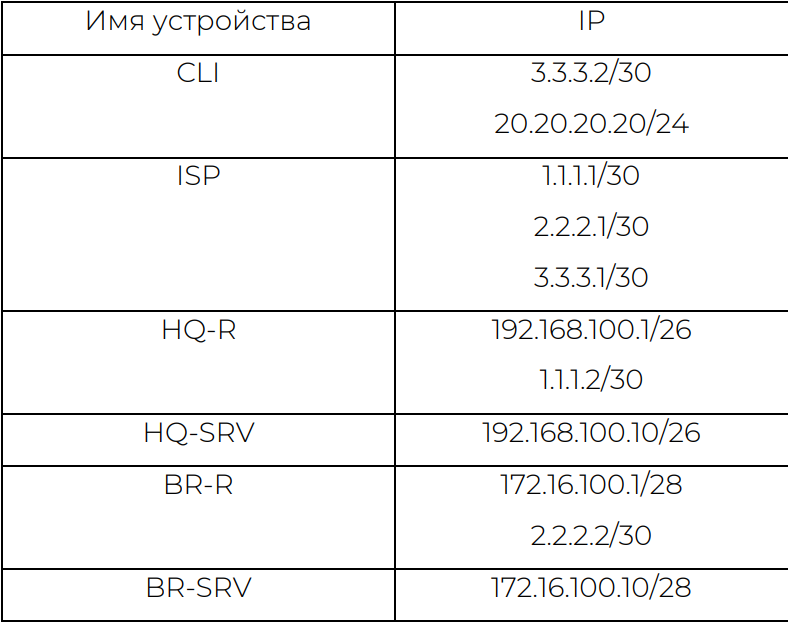
Приводим к примерному виду ниже.
HQ-SRV:
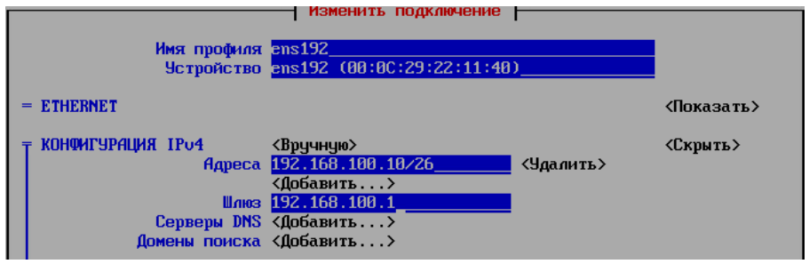
HQ-R:
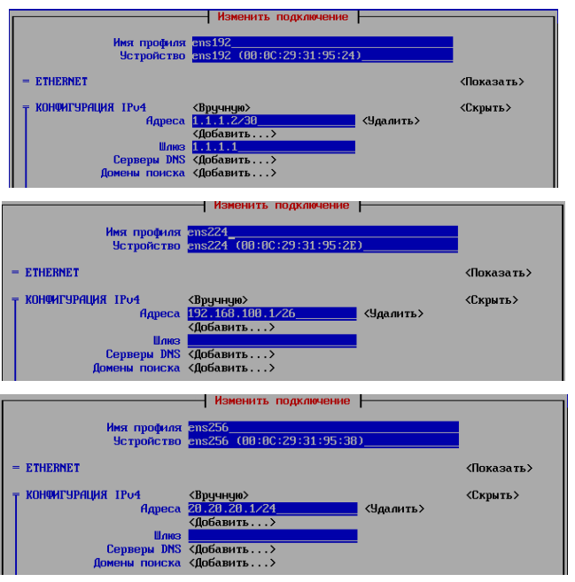
ISP:
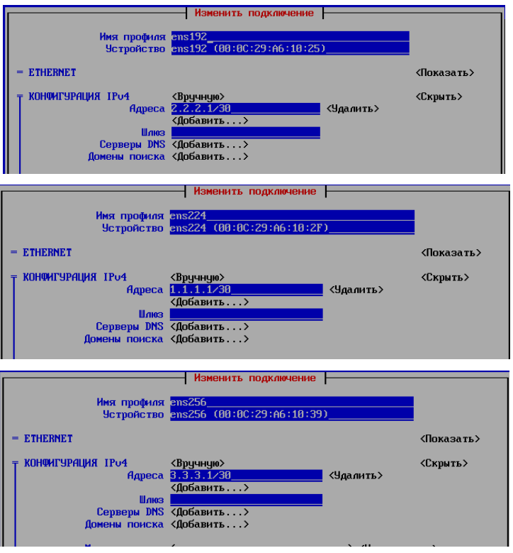
BR-R:
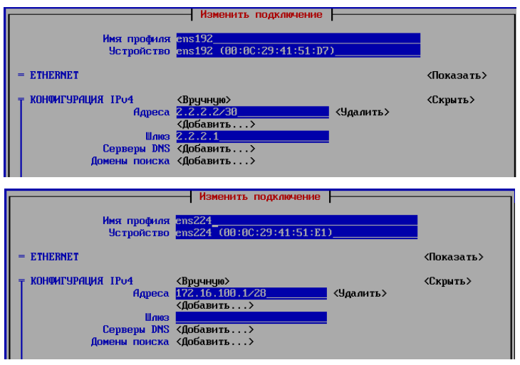
BR-SRV:
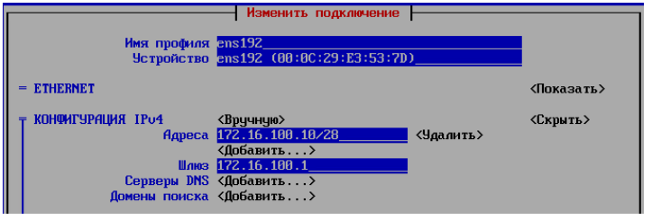
CLI:
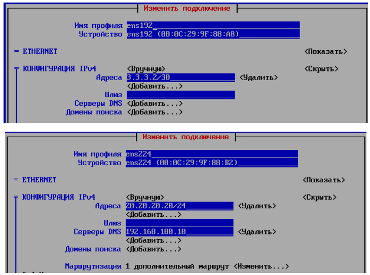
Также в маршрутизации на CLI добавить маршрут:
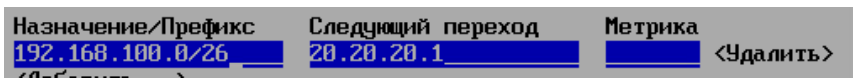
Необходимо включить маршрутизацию пакетов на роутерах HQ-R, ISP, BR-R.
Отправляем параметр пересылки пакетов в файл sysctl.conf
echo “net.ipv4.ip_forward = 1” >> /etc/sysctl.conf
Перезаписываем файл sysctl.conf
sysctl -p
Выключаем SELinux на всех хостах.
1. Заходим в конфигурационный файл SElinux.
nano /etc/sysconfig/selinux
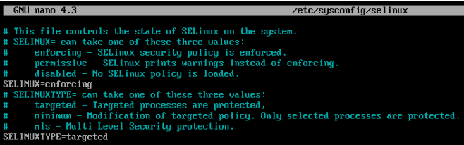
2. Значение параметра SELINUX меняем с «enforcing» на «permissive»
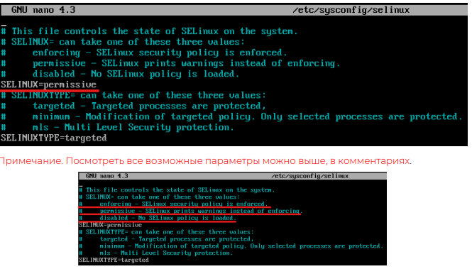
3. Перезапускаем виртуальную машину.
reboot
Для дальнейшей настройки необходимо связать филиалы с помощью туннеля.
HQ-R:
1. Заходим в псевдографический интерфейс nmtui в «Изменить подключение»
и нажимаем на «Добавить». В окне необходимо выбрать «IP-Туннель» и
«Создать»
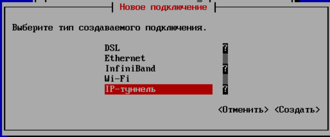
2. Настраиваем имя устройство «gre1», устройство «gre1», режим «GRE»,
родительский интерфейс «ens192», локальный адрес «1.1.1.2», удаленный
адрес «2.2.2.2», конфигурация IPv4 «Вручную», адреса «10.10.10.1/30»
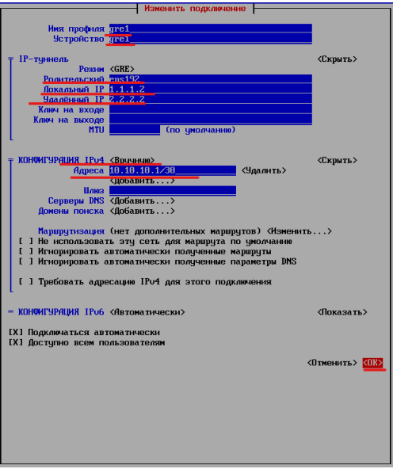
BR-R:
1. Заходим в псевдографический интерфейс nmtui в «Изменить подключение»
и нажимаем на «Добавить». В окне необходимо выбрать «IP-Туннель» и
«Создать»
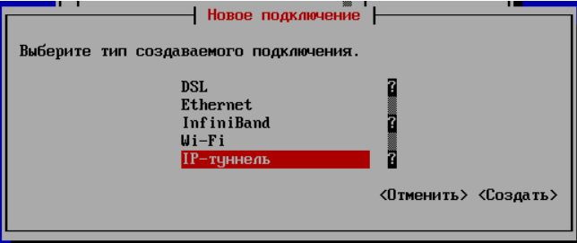
2. Настраиваем имя устройство «gre1», устройство «gre1», режим «GRE»,
родительский интерфейс «ens192», локальный адрес «2.2.2.2», удаленный
адрес «1.1.1.2», конфигурация IPv4 «Вручную», адреса «10.10.10.2/30»
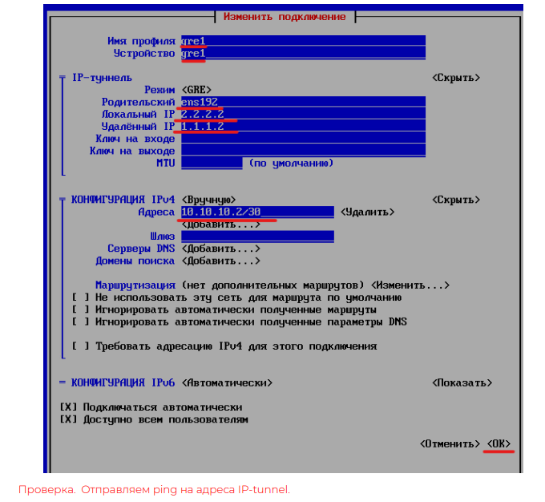
Настройте внутреннюю динамическую маршрутизацию по средствам FRR.
Выберите и обоснуйте выбор протокола динамической маршрутизации из
расчёта, что в дальнейшем сеть будет масштабироваться.
Перед настройкой динамической маршрутизации необходимо поменять ttl
туннеля.
HQ-R и BR-R:
nmcli connection modify gre1 ip-tunnel.ttl 64
HQ-R:
Перед установкой выполняем монтирование диска Packets на уровне ВМ.
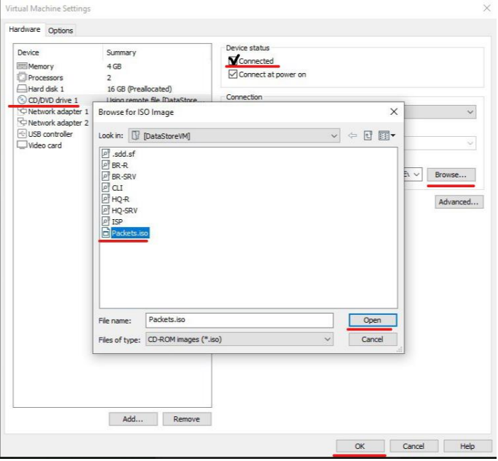
Монтируем в Linux.
mount /dev/cdrom /mnt
1. Устанавливаем FRR
cd /mnt/frr
rpm -i --force *
2. Запускаем и отправляем frr в автозагрузку
systemctl enable --now frr
systemctl status frr
3. Включаем поддержку OSPF
nano /etc/frr/daemons
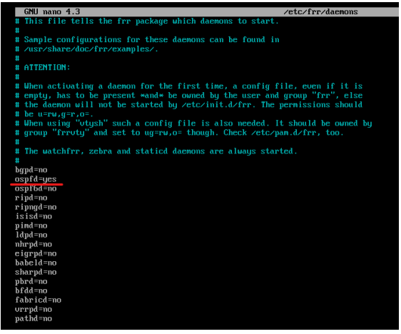
4. Перезапускаем frr
systemctl restart frr
5. Запускаем vtysh и настраиваем OSPF
vtysh
conf t
router ospf
network 192.168.100.0/26 area 0
network 10.10.10.0/30 area 0
do wr
exit
BR-R:
1. Устанавливаем FRR
cd /mnt/frr
rpm -i --force *
2. Запускаем и отправляем frr в автозагрузку
systemctl enable --now frr
systemctl status frr
3. Включаем поддержку OSPF
nano /etc/frr/daemons
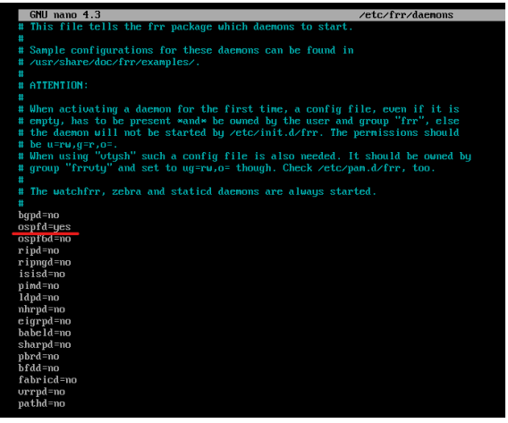
4. Перезапускаем frr
systemctl restart frr
5. Запускаем vtysh и настраиваем OSPF
vtysh
conf t
router ospf
network 172.16.100.0/28 area 0
network 10.10.10.0/30 area 0
do wr
exit
a. Составьте топологию сети L3.
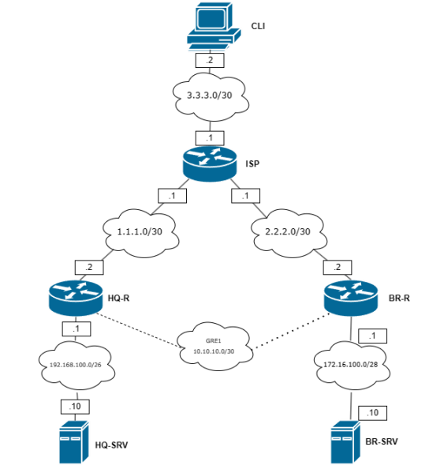
Настройте автоматическое распределение IP-адресов на роутере HQ-R.
1. Устанавливаем dhcp
cd /mnt/dhcp
rpm -i --force *
2. Настраиваем конфигурационный файл
nano /etc/dhcp/dhcpd.conf
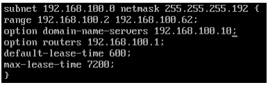
3. Запускаем и отправляем dhcpd в автозагрузку
systemctl enable --now dhcpd
systemctl status dhcpd
a. Учтите, что у сервера должен быть зарезервирован адрес.
1. Настраиваем конфигурационный файл
nano /etc/dhcp/dhcpd.conf
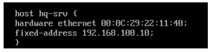
Настройте локальные учётные записи на всех устройствах в соответствии с
таблицей 2.
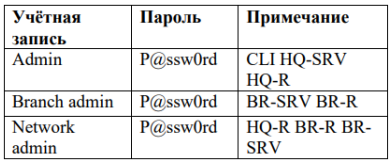
1. На CLI, HQ-SRV, HQ-R
useradd Admin
passwd Admin
(Пишем пароль P@ssw0rd два раза)
2. На BR-SRV, BR-R
useradd Branch_admin
passwd Branch_admin
(Пишем пароль P@ssw0rd два раза)
3. На HQ-R, BR-R, BR-SRV
useradd Network_admin
passwd Network_admin
(Пишем пароль P@ssw0rd два раза)
Измерьте пропускную способность сети между двумя узлами HQ-R-ISP по
средствам утилиты iperf 3. Предоставьте описание пропускной способности
канала со скриншотами.
HQ-R и ISP:
1. Устанавливаем iperf
cd /mnt/iperf
rpm -i --force *
2. На ISP:
iperf3 -s
3. На HQ-R:
iperf 3 -c 1.1.1.1
В качестве отчёта предоставляем скрин после тестирования.
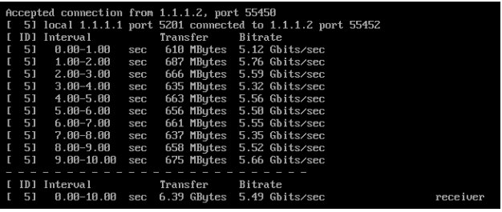
Составьте backup скрипты для сохранения конфигурации сетевых устройств,
а именно HQ-R BR-R. Продемонстрируйте их работу.
HQ-R и BR-R:
1. Создаём файл backup.sh и пишем там скрипт.
cd
nano backup.sh
HQ-R
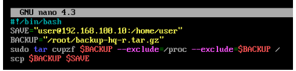
BR-R
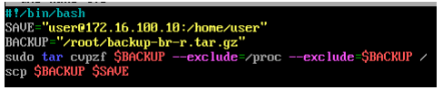
2. Добавляем возможность запускать скрипт.
chmod +x backup.sh
3. Запускаем скрипт.
./backup.sh
4. По окончание снятия backup будет запрошен логин и пароль от
пользователя user. P@ssw0rd
5. Проверяем наличие backup файлов на HQ-SRV и BR-SRV
cd /home/user/
ls

Настройте подключение по SSH для удалённого конфигурирования устройства
HQ-SRV по порту 2222. Учтите, что вам необходимо перенаправить трафик на
этот порт по средствам контролирования трафика.
HQ-SRV:
1. Настраиваем систему контролирования трафика для перенаправления
трафика.
iptables -t nat -A PREROUTING -p tcp --dport 2222 -j REDIRECT --to-port
22
2. Включаем iptables-services для работы правил после перезагрузки:
systemctl enable --now iptables
3. Сохраняем текущую конфигурацию
iptables-save > /etc/sysconfig/iptables
Настройте контроль доступа до HQ-SRV по SSH со всех устройств, кроме
CLI.
HQ-SRV:
1. Настраиваем систему контролирования трафика для перенаправления
трафика.
iptables -A INPUT -s 20.20.20.20 -p tcp --dport 22 -j DROP
2. Сохраняем текущую конфигурацию
iptables-save > /etc/sysconfig/iptables
Задание модуля 2
Настройте синхронизацию времени между сетевыми устройствами по протоколу
NTP.
a. В качестве сервера должен выступать роутер HQ-R со стратумом 5
По умолчанию chrony установлен. Сразу начинаем с его настройки.
1. Изменяем конфигурационный файл.
nano /etc/chrony.conf
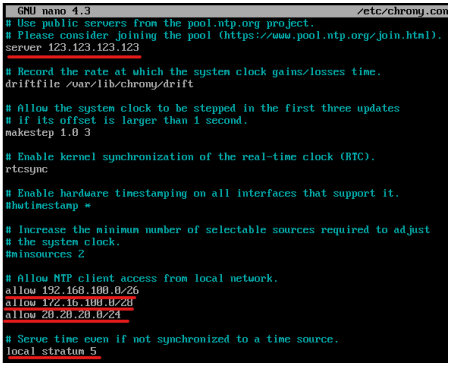
b. Используйте Loopback интерфейс на HQ-R, как источник сервера времени
1. Создаём loopback интерфейс
nmcli conn add type dummy connection.interface-name Lo1
nmcli conn edit dummy-Lo1
set connection.id Lo1
set connection.interface-name Lo1
set connection.autoconnect yes
set ipv4.method manual
set ipv4.address x.x.x.x/x
save
quit
2. Проверяем созданный loopback
ip a
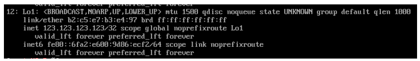
3. Перезапускаем сервис.
systemctl restart chronyd
c. Все остальные устройства и сервера должны синхронизировать
свое время с роутером HQ-R
1. На всех устройствах кроме CLI
nano /etc/chrony.conf
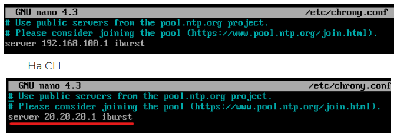
2. Перезапускаем сервис
systemctl restart chronyd
d. Все устройства и сервера настроены на московский часовой пояс (UTC
+3)
1. На всех устройствах
timedatectl set-timezone Europe/Moscow
Настройте сервер домена выбор, его типа обоснуйте, на базе HQ-SRV через
web интерфейс, выбор технологий обоснуйте
b. Организуйте отслеживание подключения к домену
1. Устанавливаем пакеты FreeIPA на HQ-SRV
cd /mnt/freeipa-server
rpm -i --force *
Удаляем java
rpm -e java-11-openjdk-headless --nodeps
2. Задаём HQ-SRV hostname:
hostnamectl set-hostname hq-srv.demo.work
2. Начинаем установку FreeIPA домена на HQ-SRV
ipa-server-install –mkhomedir
Соглашаемся на интегрированную службу DNS
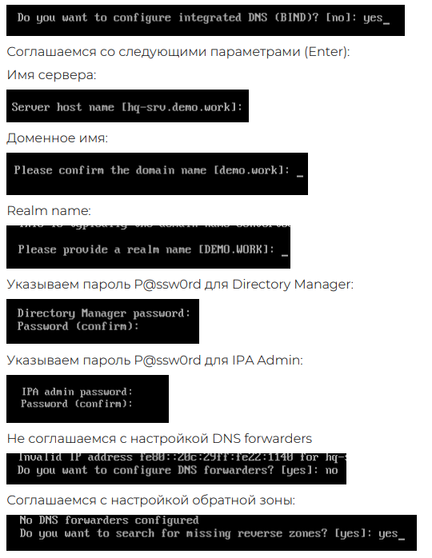
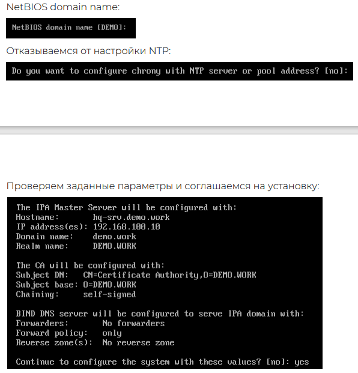
3. После установки убедитесь, что сервер IPA работает:
kinit admin
ipa user-find admin
4. Устанавливаем оболочку по умолчанию для пользователей:
ipa config-mod --defaultshell=/usr/bin/bash
a. Введите машины BR-SRV и CLI в данный домен
1. Устанавливаем пакеты FreeIPA на BR-SRV
cd /mnt/freeipa-client
rpm -i --force * --nodeps
2. Задаём BR-SRV и CLI hostname:
hostnamectl set-hostname br-srv.demo.work
hostnamectl set-hostname CLI.demo.work
3. Через nmtui задаём DNS-сервер
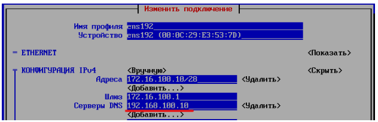
4. Вводим в домен
ipa-client-install --mkhomedir --enable-dns-updates
5. Отказываемся от настройки NTP:

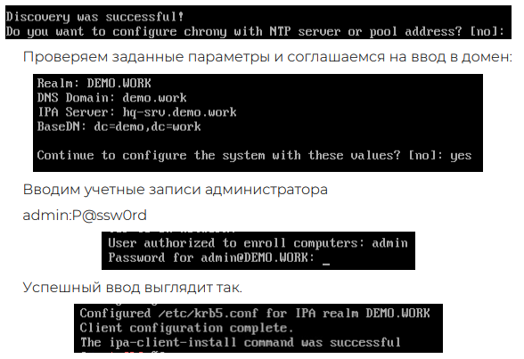
Проверяем введенные хосты в веб-интерфейсе IPA Заходим на веб-интерфейс
с HQ-SRV по адресу hq-srv.demo.work
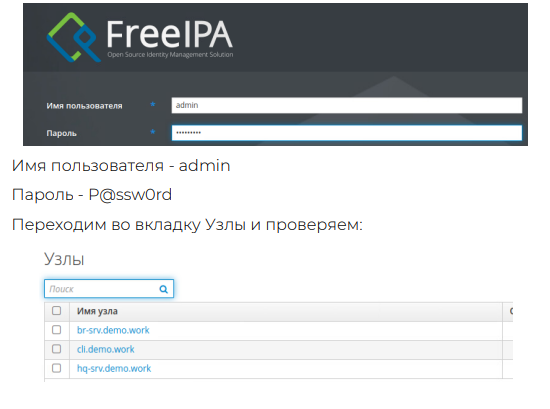
Настройте DNS-сервер на сервере HQ-SRV: a. На DNS сервере необходимо
настроить 2 зоны Зона hq.work, также не забудьте настроить обратную
зону.
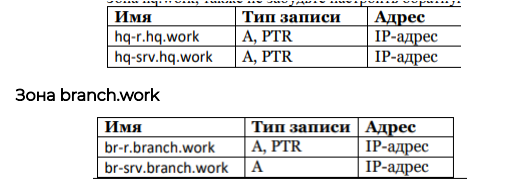
Для создания DNS-сервера воспользуемся интегрированной службой DNS в
FreeIPA.
1. Для этого переходим во вкладку Сетевые службы > DNS > Зоны DNS
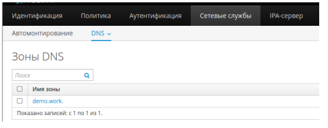
2. Добавляем прямые и обратные зоны
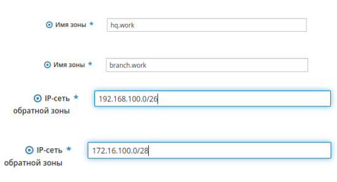
Получаем следующее
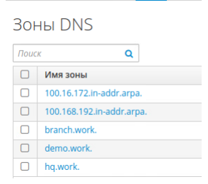
Заходим в настройки зоны hq.work и добавляем A записи, одновременно
создавая PTR
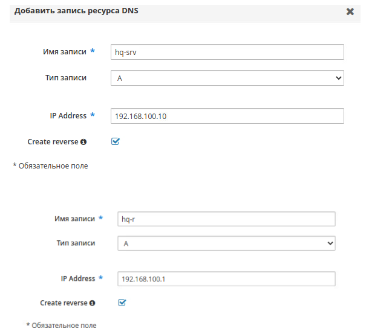
Заходим в настройки зоны branch.work и добавляем A записи, одновременно
создавая PTR
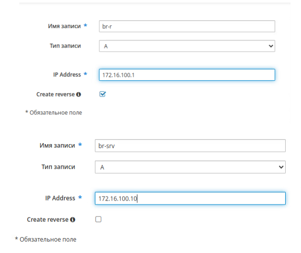
4. Реализуйте файловый SMB или NFS (выбор обоснуйте) сервер на базе
сервера HQ-SRV.
a. Должны быть опубликованы общие папки по названиям:
i. Branch_Files - только для пользователя Branch admin;
ii. Network - только для пользователя Network admin;
iii. Admin_Files - только для пользователя Admin;
На HQ-SRV:
1. Запускаем службу и добавляем в автозагрузку
systemctl enable nfs-server.service --now
2. Создаём общие папки
mkdir -p /nfs/Branch_Files
mkdir -p /nfs/Network
mkdir -p /nfs/Admin_Files
3. Передаём папки пользователем
chown -R admin:admin /nfs/Admin_Files/
chown -R branch_admin:branch_admin /nfs/Branch_Files/
chown -R network_admin:network_admin /nfs/Network/
4. Открываем настройки nfs-сервера и прописываем настройки.
nano /etc/exports
/nfs/Branch_Files *(rw,sync)
/nfs/Network *(rw,sync)
/nfs/Admin_Files *(rw,sync)
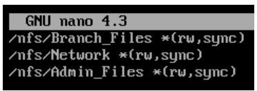
5. Применяем настройки.
exportfs -ra
Сконфигурируйте веб-сервер LMS Apache на сервере BRSRV: a. На главной
странице должен отражаться номер места b. Используйте базу данных mySQL
c. Создайте пользователей в соответствии с таблицей, пароли у всех
пользователей «P@ssw0rd»
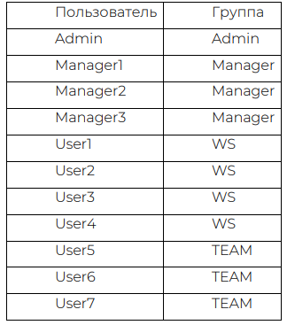
1. Устанавливаем docker
cd /mnt/docker
rpm –i --force *
Загрузите образы:
docker load < /mnt/images/moodle.tar
docker load < /mnt/images/mariadb.tar
2. Запускаем и отправляем docker в автозагрузку
systemctl enable --now docker
systemctl status docker
3. Заходим в /var/www/html и создаем директорию moodle
cd /var/www/html
mkdir moodle
4. Создаем файл docker-compose.yml и приводим его к виду
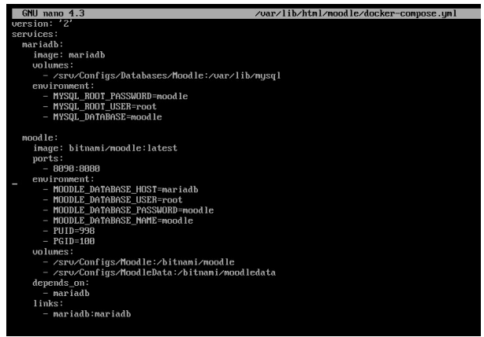
5. Запускаем сборку
docker-compose -f docker-compose up –d
6. После завершения и запуска контейнера, переходим на сайт по порту
8080, нажимаем log in и вводим данные:
Логин: user
Пароль: bitnami

7. Заходим во вкладку Site administration, переходим в Users и нажимаем
add a new user. Добавляем пользователей в соответствии с таблицей
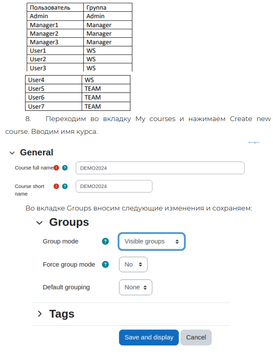
9. Переходим во вкладку Participants и нажимаем Enrol users. Назначаем
всех пользователей и нажимаем Enrol users
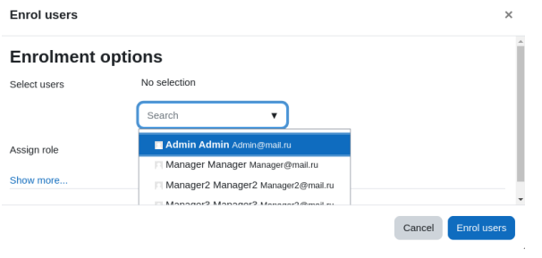
10. Нажимаем Enrolled users и переходим в Groups.
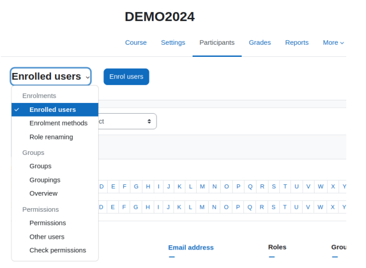
11. Нажимаем Create group и вводим имя группы в соответствии с таблицей
и сохраняем. 12. Нажимаем Add/remove users и добавляем всех созданных
пользователей в соответствии с таблицей
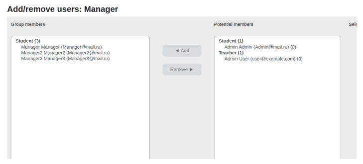
Запустите сервис MediaWiki используя docker на сервере
HQ-SRV.
Загрузите образы:
docker load < /mnt/images/mediawiki.tar
docker load < /mnt/images/mysql.tar
b. Создайте в домашней директории пользователя файл wiki.yml
для приложения MediaWiki:
i. Средствами docker compose должен создаваться стек
контейнеров с приложением MediaWiki и базой данных
ii. Используйте два сервиса;
iii. Основной контейнер MediaWiki должен называться wiki и
использовать образ mediawiki;
iv. Файл LocalSettings.php с корректными настройками должен
находиться в домашней папке пользователя и автоматически
монтироваться в образ;
v. Контейнер с базой данных должен называться db и
использовать образ mysql;
vi. Он должен создавать базу с названием mediawiki, доступную по
стандартному порту, для пользователя wiki с паролем DEP@ssw0rd;
vii. База должна храниться в отдельном volume с названием
dbvolume.
MediaWiki должна быть доступна извне через порт 8080.
1. Создаем в домашней директории пользователя файл wiki.yml
для приложения MediaWiki:
cd /home/user nano wiki.yml
2. Приводим файл к виду:
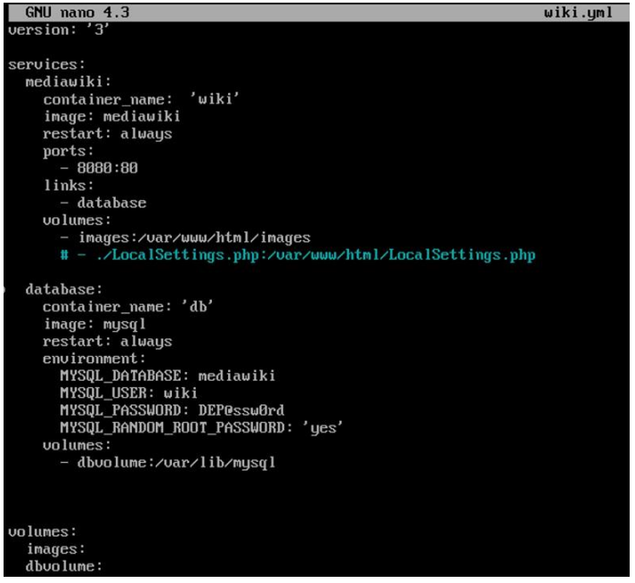
3. Запускаем сборку
docker-compose -f wiki.yml up -d
4. После завершения и запуска контейнера, переходим на сайт по
порту 8080 и начинаем установку
5. Нажимаем на set up the wiki
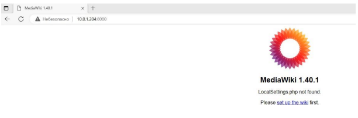
6. Настраиваем подключение к БД
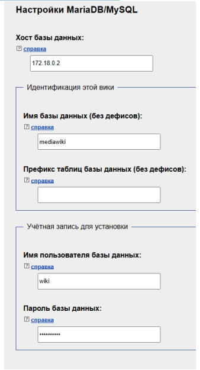
7. Создаём ту же УЗ
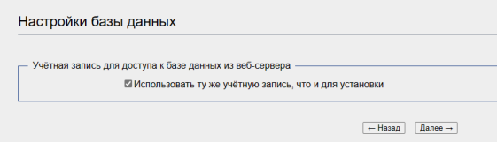
8. Настраиваем Mediawiki
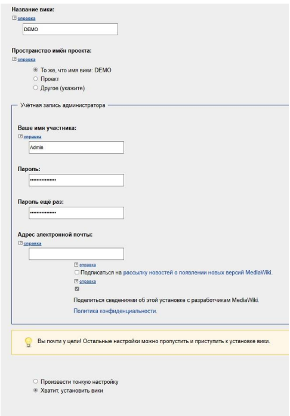
9. Не забываем скачать файл
10. Перемещаем данный файл в ту же директорию, где и wiki.yml
11. Необходимо расскоментировать параметр в wiki.yml
12. Пересобираем и запускаем
docker-compose -f wiki.yml up -d
13. Проверяем